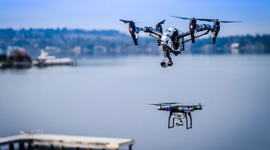
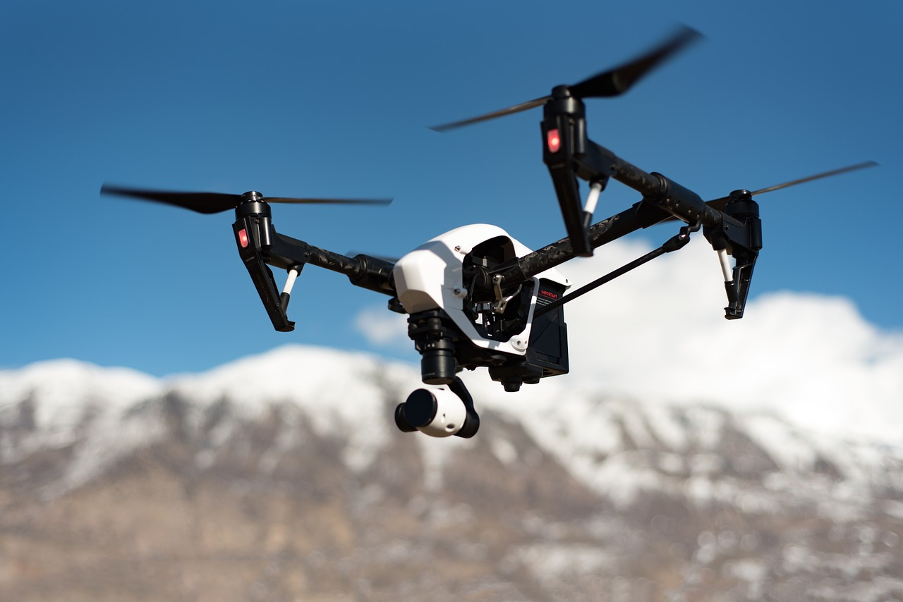

<div class="about">
  <div class="container about__container">
    <h1 class="about__title">
      About Us
    </h1>

    <p class="about__text">
      Drones4Hire.com is a revolutionary drone hiring service, connecting professional drone pilots to those who need
      them. With the drone industry rapidly increasing, the need for stress free hiring service was needed. With that,
      our
      platform was created to help clients locate the best drone pilots in their area. Drones4hire.com is the trusted
      brand in contract drone services throughout numerous industries. We are powered by the largest online drone
      pilot
      directory.
      Drones4Hire.com gives drone pilots the best online tools to only promote their business and connect with
      clients, but to also grown their business and client base.We provide top quality services to both clients and
      drone
      pilots. For clients, we make it easy and quick to find and contact the nation’s top drone pilots.
      <a class="about__link">Click here to register!</a>
    </p>

    <figure class="about__figure">
      
    </figure>

    <h2 class="about__subtitle">
      About Our CEO
    </h2>

    <p class="about__text">
      His life in aviation when he received a flight lesson for his 21st birthday. He found the experience so inspiring
      that
      he decided to change his career path to aviation. After completing an undergraduate degree in aviation management,
      he
      received a Master’s in aviation with a minor in domestic air law at the University of North Dakota.
      <br>
      <br>
      Along the way, he became passionate about drones and obtained his FAA pilot certification. In 2016 he accepted an
      offer for an Unmanned Aerial Vehicle instructor for a college university.
      <br>
      <br>
      After graduating, he was hired to manage airline’s operations and work on special projects that included startups
      around the country for airlines including Delta, Southwest and American. These assignments allowed him to
      cultivate
      his managerial talents, as he coordinated with the FAA, TSA, and local airport authorities to complete the
      logistically challenging task of starting an airline in a new location. He discovered that he has a talent for
      navigating the complexities of running a business.
      <br>
      <br>
      In 2015, he realized there was a gap in the market—while the demand for drone pilots was growing exponentially,
      there
      was still no easy way for potential clients to find what they were looking for. He decided to combine his two
      passions
      by creating an innovative company that would allow drone pilots to find clients and grow their businesses.
    </p>

    <figure class="about__figure">
      
    </figure>
  </div>
</div>
